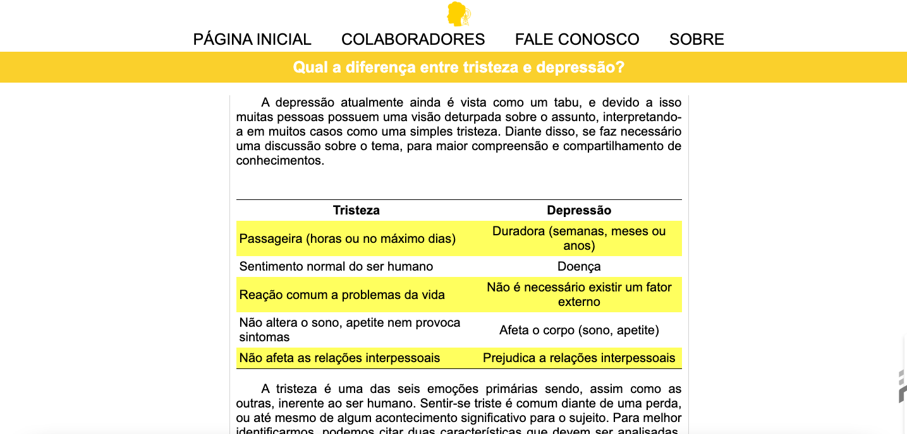

Redealogando
O Redealogando foi desenvolvido no âmbito da disciplina Linguagem de Marcação do curso de Tecnologia em Sistemas para Internet (TSI) do IFPB, motivado pelo aumento de casos de depressão entre alunos da instituição. O site tem como missão fornecer informações acessíveis, acolhedoras e baseadas em evidências sobre depressão e saúde mental, visando ampliar o conhecimento sobre o tema e encorajar a busca por apoio.
Conhecida como o “mal do século”, a depressão afeta milhões de pessoas no mundo. Muitas vezes, é mal compreendida, sendo confundida com fraqueza ou tristeza passageira. O projeto Redealogando surge para desmistificar essa condição e romper tabus, abordando de forma clara e empática temas como sintomas, diferenciação entre tristeza e depressão, e onde buscar ajuda.
A plataforma é totalmente responsiva e acessível, permitindo o acesso por estudantes e demais interessados de qualquer dispositivo. Com seções temáticas, vídeos educativos, comparações ilustrativas e linguagem sensível, o Redealogando se posiciona como um recurso digital de utilidade pública dentro do ambiente educacional.